| 日付 | 2026年8月6日（木） - 2026年8月10日（月） | ||||||||||
|---|---|---|---|---|---|---|---|---|---|---|---|
| 山域 | 中央アルプス | ||||||||||
| メンバー | 単独 | ||||||||||
| 山行形態 | 4泊5日避難小屋、テント泊 | ||||||||||
| アクセス | 電車、バス | ||||||||||
| ルート (Map) |
|
5日目
本日は急ぐ必要はないため5時に出発。もう周囲は明るい。
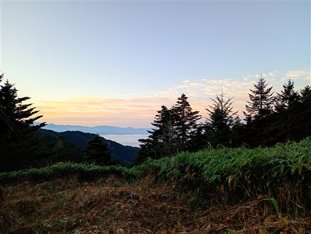
安平路避難小屋を後にする。
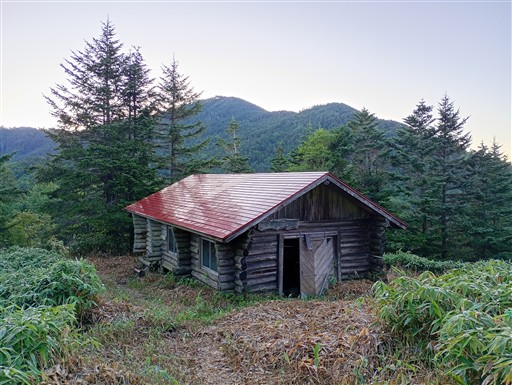
歩きやすすぎる登山道。ありがたい。
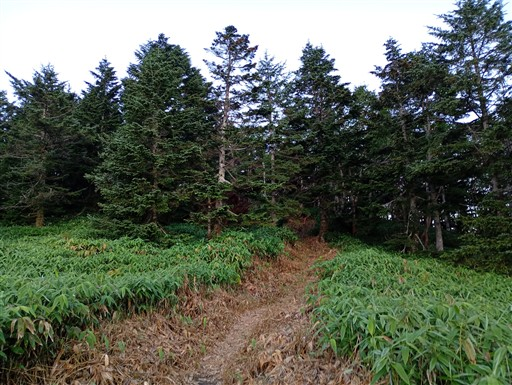
樹林帯の向こうに太陽が見える。
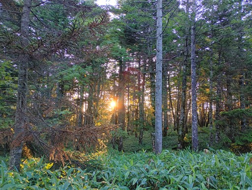
日が差し込んで美しい。
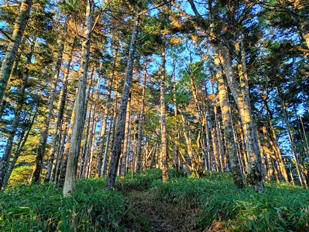
白ビソ山を通過。
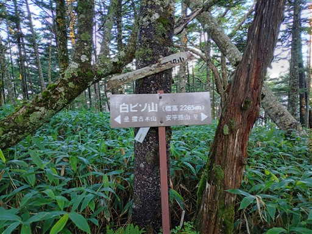
美しい笹原。でも笹を見るとPTSDを発症しそう。
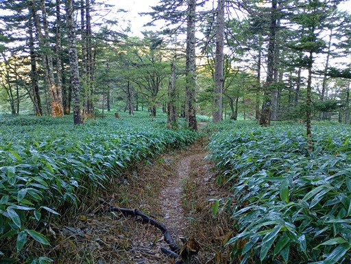
所々でこういった水たまりがある。
笹薮の中にあると、はまってしまう危険ポイントだ。
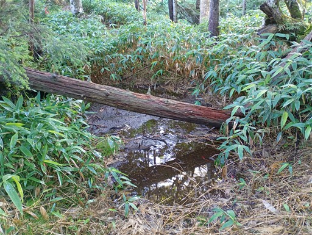
ちょっとした急斜面の登り。
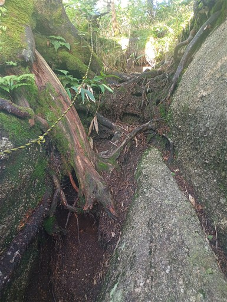
摺古木山に到着。標高2169m。
本山行最後のピークだ。
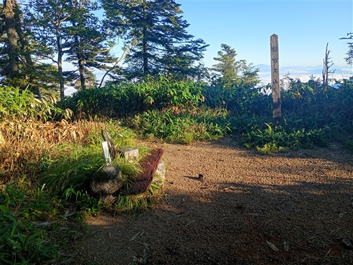
展望は大して広がらないが、御嶽山や北アルプスが見える。
摺古木山展望台の方が展望が良さそうなので、そちらに向かう。
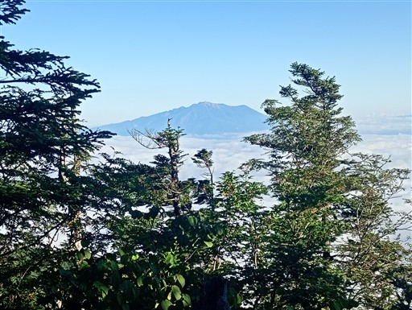
展望台への道もきれいだ。
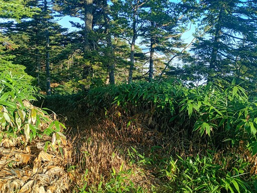
大きめの池がある。
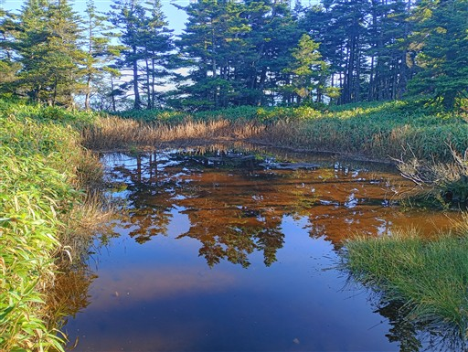
本日も晴れ渡っている。
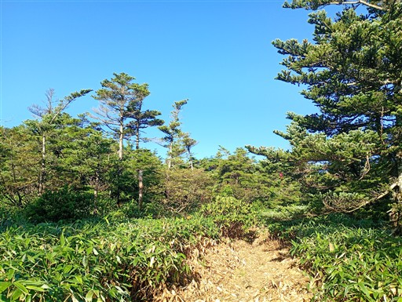
展望台直下だけ、木が生い茂っていて通過が困難。
こういった場所も大きいザックだと途端に大変になる。
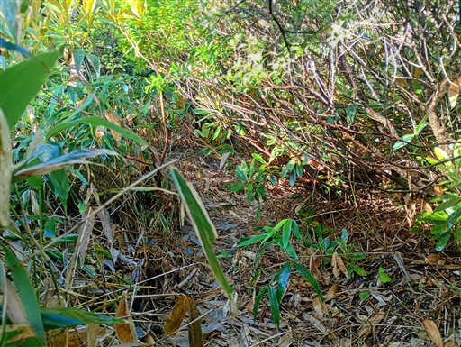
摺古木山展望台に到着。
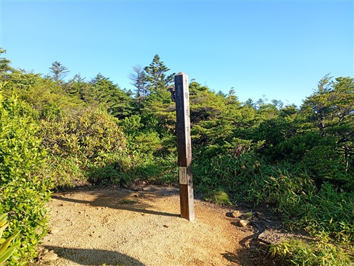
展望台というほどの絶景ポイントではないが、中央アルプスが見渡せる。
これまで自分が歩いてきた山々が全て見えていると考えると感慨深い。
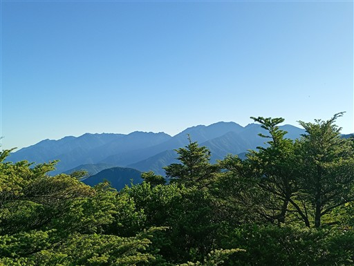
ここからの下山道があるのだが、かなり道が悪そうだ。藪が生い茂っている。
本日は絶対に濡れたくないため、この道は避けて元来た道を戻る。
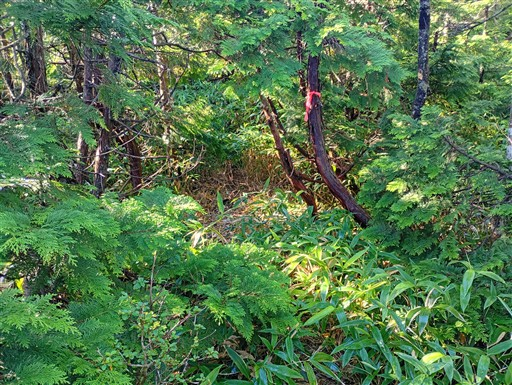
再び摺古木山に戻ってくる。
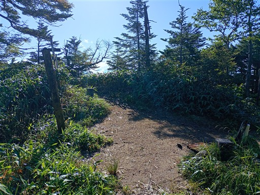
北アルプスの眺め。左が乗鞍岳、右が穂高槍だ。
これで展望も見納めだ。
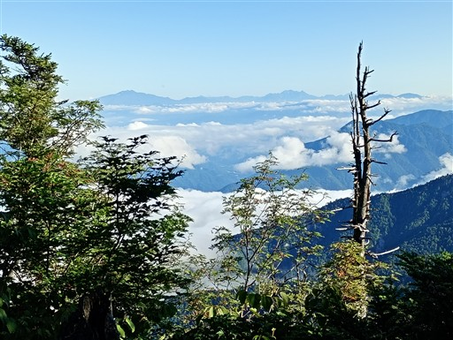
下山道はちょっと細い。
どうってことのない道なのだが、濡れた笹が両側から覆い被さっている。
ストックで水を払いながら歩いていく。
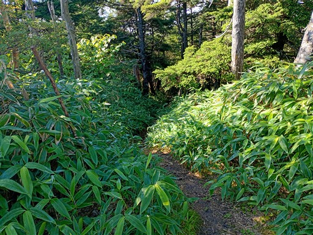
水場。地図には載っていないが、ここまで来れば水を得られる。
まぁ、安平路避難小屋からはそれなりの距離があるが…
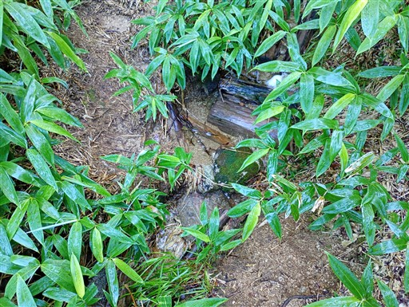
見えているのはアザミ岳の辺り。恵那山に続く主稜線上のピークだ。
激薮で、無雪期に歩く人は変人確定だろう。
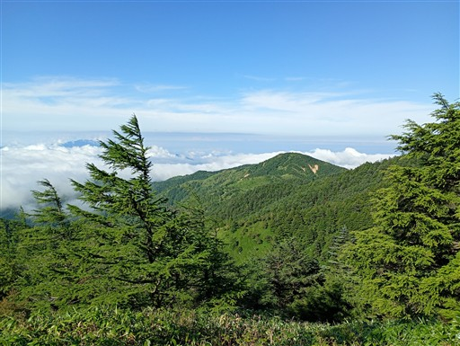
摺古木山展望台からの登山道との合流地点。
何とこちらは木で塞がれている。道はかなり悪いようだ。
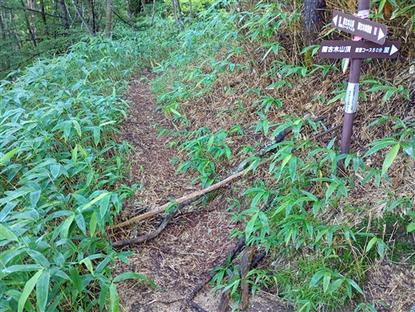
樹林帯の中の静かな道が続く。
葉は全て濡れているため、ストックで払いつつ、慎重に歩を進める。
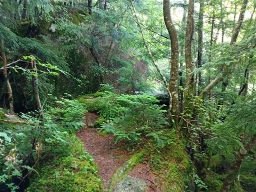
下山地点近くになって、登山道が濡れた笹薮に覆われる。
結局、最後の最後になって再び靴が完全に水浸しになってしまう。
靴の中にキッチンペーパーを詰め込んで乾かし、予備の靴下を履いて、
ストックで露を払いつつここまでやってきたが、その努力がここで全て無になった。
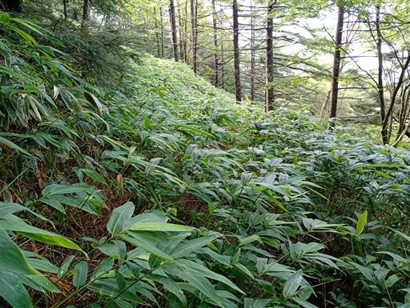
暗澹たる気持ちで下山。
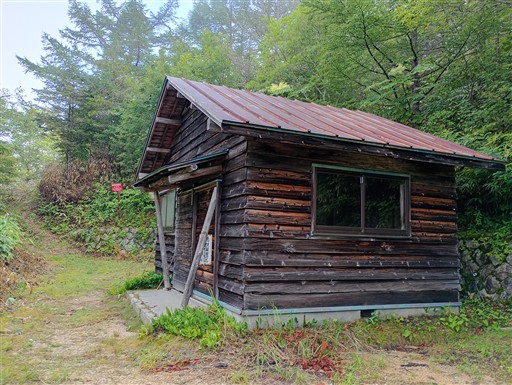
ここからは林道歩き。もう困難な場所は何一つなく、淡々と歩くのみ。
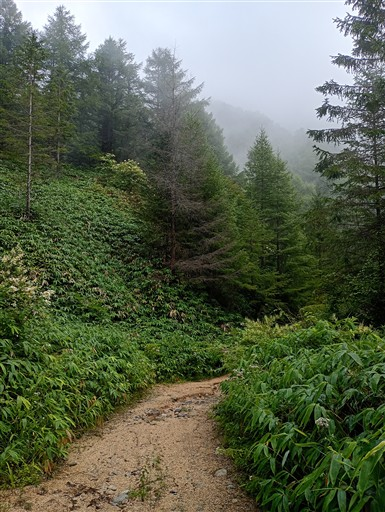
道はだいぶ荒れている。車の通行は不可能だろう。
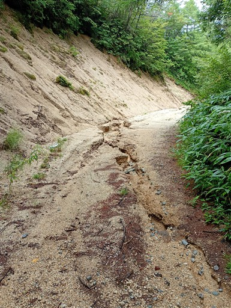
アサギマダラを発見。周囲に何匹か飛んでいる。
少し気持ちが落ち着く。
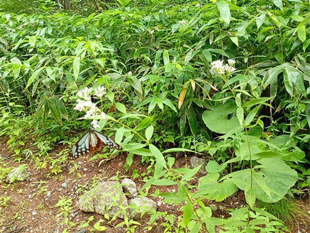
笹原の中の林道。本当にこの辺りは笹、笹、笹だ。
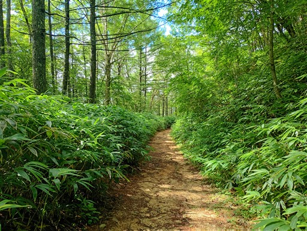
目立つ黄色い花が咲いている。オオハンゴンソウという帰化植物らしい。
初めて見かけた。
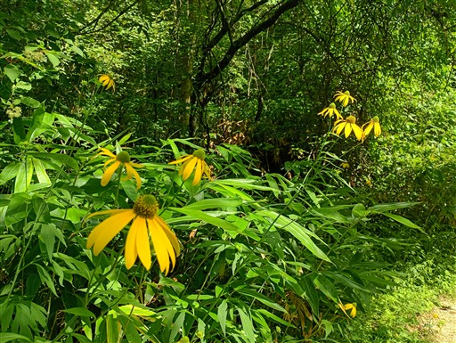
林道終点に到着。車が入れるのはここまでのようだ。
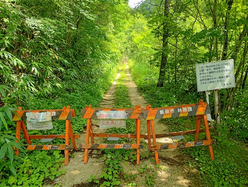
ここからは道が良くなる。歩く分には大して変わらないが。
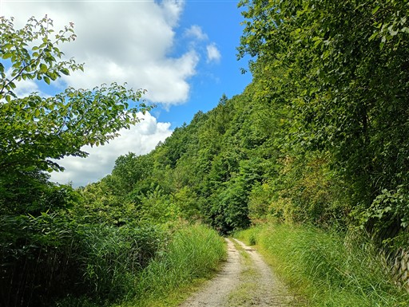
滝で靴を洗う。中が水浸しだが、
表面も笹まみれで見られたものではなかったので。
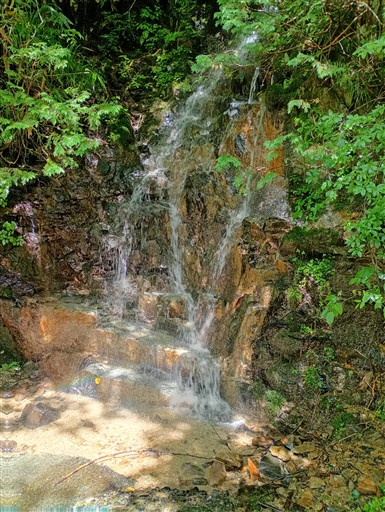
小さなダム。水がきれいだ。
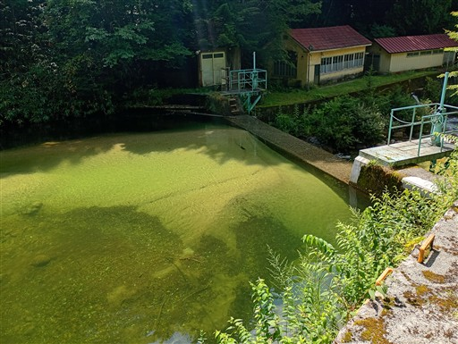
摺古木山登山口まで歩いてくる。一応、ここが山行のゴールだ。標高1140m。
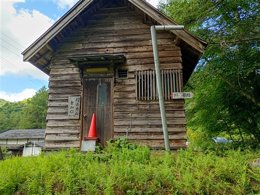
ここは大平宿。かつて、伊那と木曽を結ぶ峠道の宿場町として栄えた。
今では廃村になったが田舎体験の観光地として整備されている。
3日目の南駒ヶ岳の山頂直下以来、ここまで誰とも会わなかった。久しぶりに人を見かける。
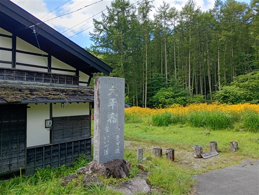
大群落のオオハンゴンソウ。特定外来種で駆除が難しいらしい。
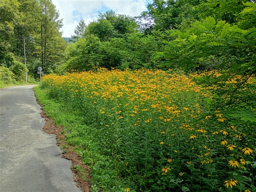
ここからどうするか。タクシーか徒歩しかないが、まだ動けるため徒歩を選択。
車道を下っていくのかと思ったら若干の登り。飯田峠までは登りのようだ。
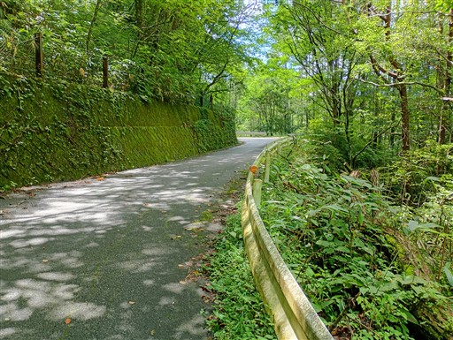
飯田峠に到着。およそ100mの登りだった。
大平街道の立派な石碑が立っている。
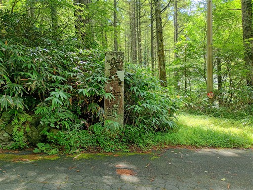
道端に石像がある。三十三番十一面観音。
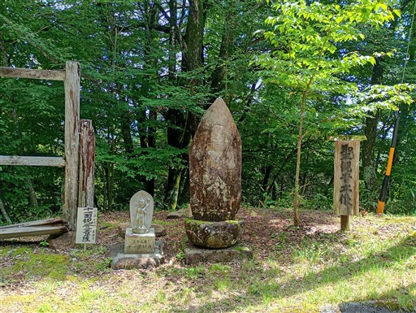
旧道入口の標識。距離の短い道があるかと思ったが、草に覆われて道は見当たらない。
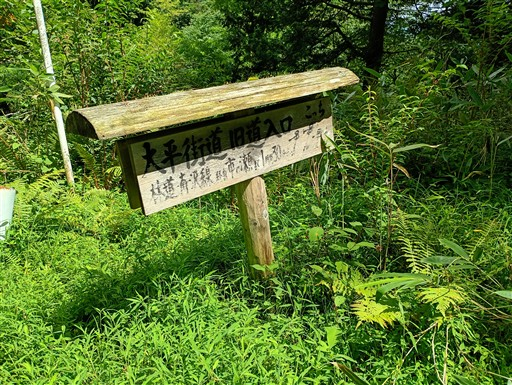
三十二番千手千眼観音。一番がゴールだろうか？
こんなの歩行者しか気づかないだろうし、歩行者なんてまずいないだろう。
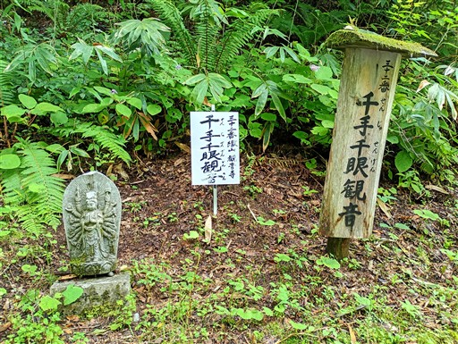
ケイタイ可の標識。確かにつながる。GoogleMapのルートをセットする。
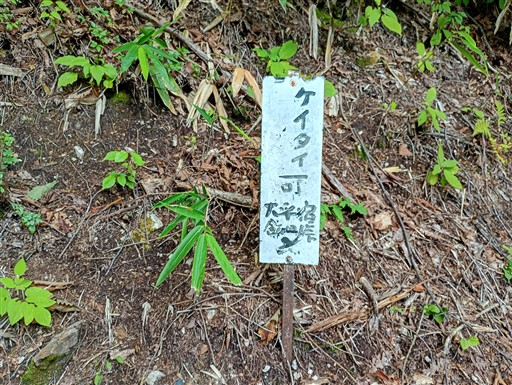
二十番千手観音まで来た。
しかしこれらの石仏、間隔がバラバラ過ぎて、現在地把握の目安には全く使えない。
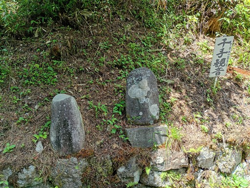
振袖道標。振袖姿の女性が指をさしている珍しい道標だ。
旧道にあったものを新道に移設したらしい。
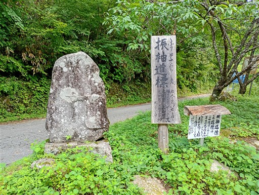
橋が水没している。手すりの脇を伝って移動。
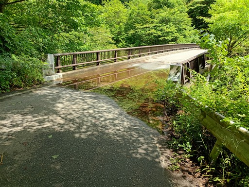
眼下を流れる川。それなりの高度感だ。
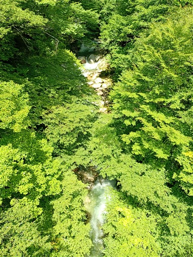
あずき洗いの滝。小振りの滝だ。
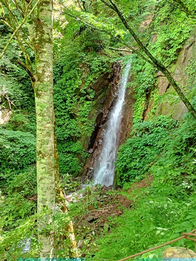
関島煙火製造所。山奥深くにある老舗の花火メーカー。
赤い筒は尺玉を打ち上げる巨大な筒だ。
周囲は火薬の匂いが漂っている。
眼下に松川ダムが見えてきた。ゴールは近い。
大型ダンプが通過するのは分かったけれど、台数情報に意味はあるのだろうか？
ついに一番如意輪観音に到着。この三十三観音についても解説板に書かれている。
かつて街道を見守っていた石仏のうち、失われた十四体を復元したらしい。
これまで見てきた石仏は新旧混ざっていたようだ。
そして、ついに大休バス停に到着。標高620m。
長かった山行が終わった。
バスで飯田駅に移動。奇しくも、同じく苦労した南ア深南部縦走時の帰着駅と同じだ。
今回の山行は、自分の登山経験の中で、一、二位を争う困難さだった。
標高差は大きくなく、体力的にはそれほどでもないと考えていたが、
後半は登山道の難易度と水場の少なさによる荷物の重さに苦しめられた。
中央アルプスの厳しさを味わった山行だった。